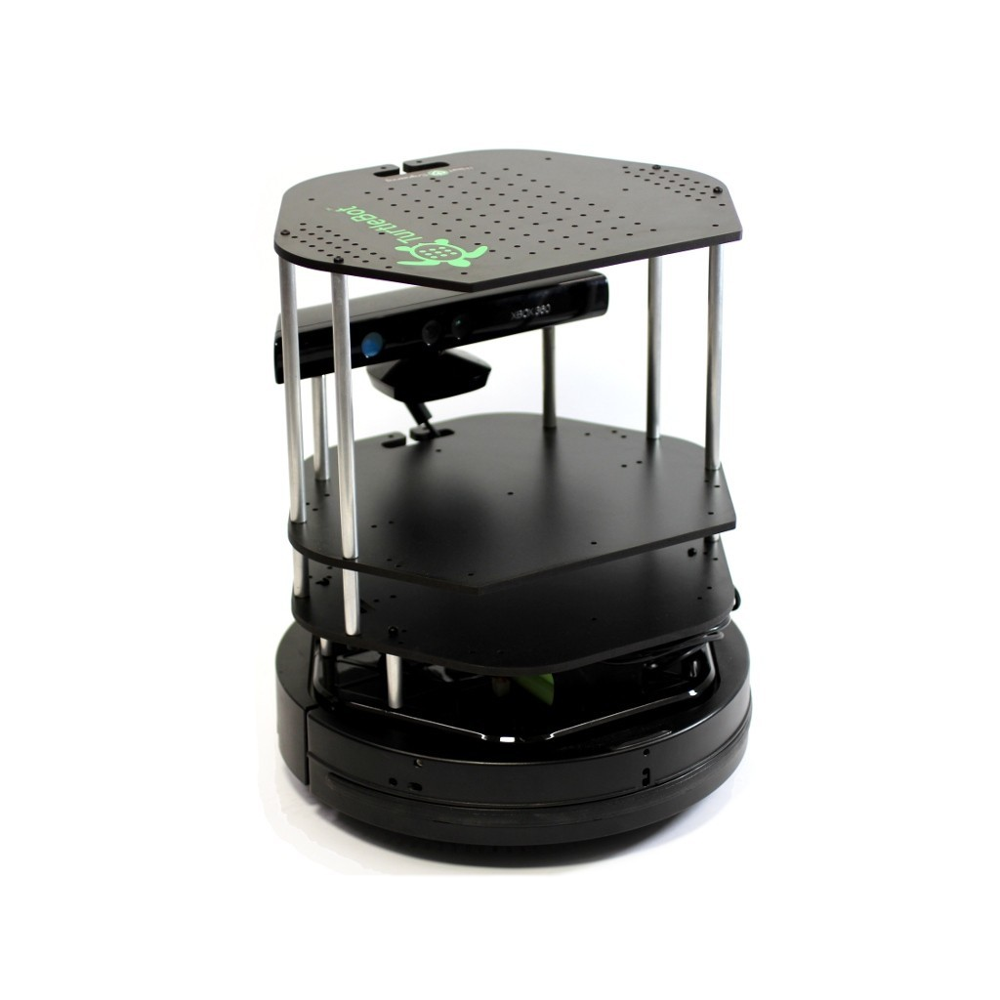
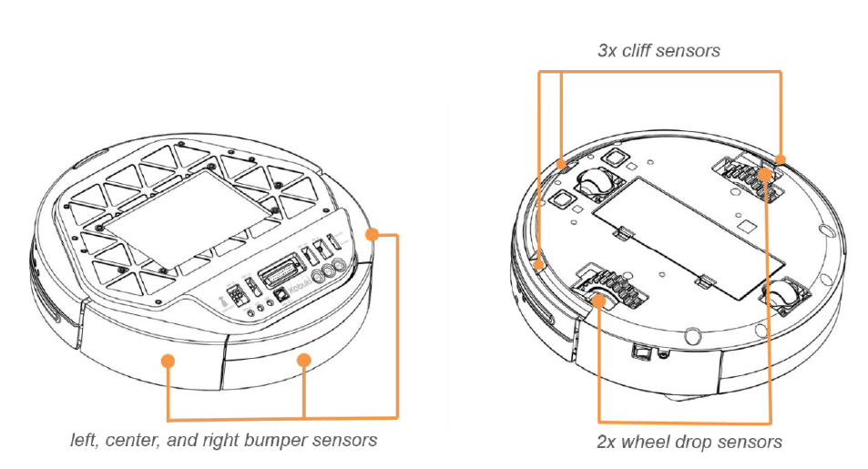
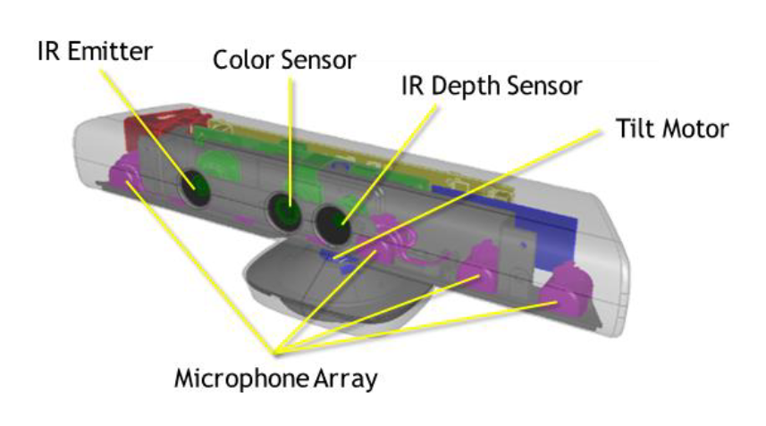
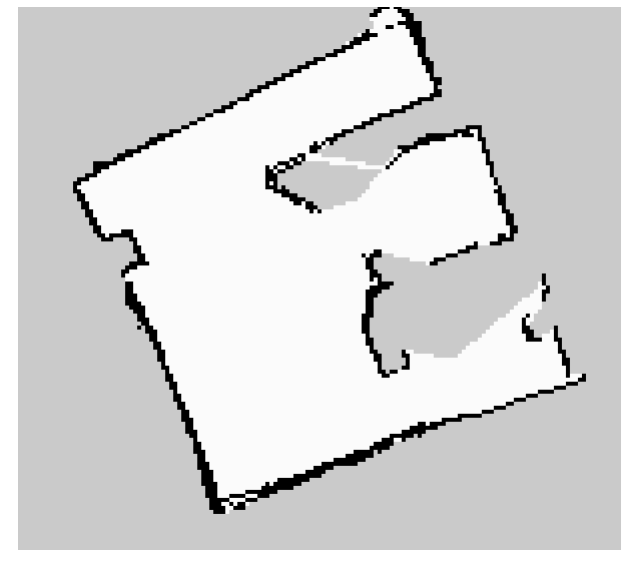

Oogway is a learning team project to utilize ROS topics and libraries and get hands-on experience working with the Turtlebot with Linux systems. The project started by using the Turtlebot 2, featuring the Microsoft Kinect 360 and Kobuki base, to achieve 3 main objectives: mapping an unknown environment, image recognition and path planning, and robot follower with reaction to external stimuli.
Built-in motors of the Turtlebot detects angular/linear speeds, which became useful to control the robot's movement. The gyroscope also enables turtlebot to determine its position and direction relative to starting point, allowing it to localize its position whenever it gets lost. Bumper and Kinect laser-depth sensor: Bumper to detect any hits to the environment and collision with obstacles, depth sensor(58 degrees horizontal view, 0.8-3.5m in distance) to detect any obstacles ahead and map its surrounding environment. RGB camera to capture images of objectives, which can be processed for object detection Wheel drop sensors: detects drop of its wheels, when it is taken off the ground. Used together with the cliff sensors, which can determine the robot’s height when picked up.

Strategy: wall-following algorithm to identify the outer layer of the environment, followed by random-turns around walls to explore the centre of the map. In this stage, a finite state machine was implemented to control the robot. At stationary state, the robot scans its surroundings. During its travelling state, a speed-controlled moving algorithm around obstacles moves the robot around the exterior of the environment. After a certain time period, the robot will add randomness to its movement, alloiwng it to travel near the centre of the map.
To meet objectives within the time constraint, used a Travelling Salesman Problem (TSP) algorithm. Based on the pre-provided coordinates, the most efficient pathway was calculated based on Euclidean distances. Upon arrival at each coordinates, the turtlebot will use its camera sensor to identify the object using template matching, using OpenCV and SURF. These features were used to identify individual objectives by matching with pre-provided templates.
Following mechanism: detects person using its depth sensor and maintains a 1m distance to follow
Inspired by the emotions from Pixar’s film “Inside Out”, Oogway reacts to 4 external stimuli: 1. Lost target: when the following lead disappears abruptly from its sight, the robot will express a “sad” emotion and attempt to look for its lead by rotating. 2. Unforeseen obstacle: when hit by an obstacle that cannot be detected by its camera sensors and only its bumper, the robot will express a surprised emotion for a certain period of time. Then, the robot will follow its lead again 3. Sudden movement: if the robot is picked up in the air, the robot will express a ‘scared” emotion and frantically 4. User mishandling: if the robot is abused (kicked, bumper hit, picked up) multiple times, its internal counter will execute the robot to express an “anger” emotion. After expressing its anger motion, it returns to the following state and follows its lead.
1. Learned to develop scripts in C++, using topics and nodes from ROS(robot operating system) on a Ubuntu-based system 2. Develop image recognition algorithms through SURF and OpenCV, as well as path planning algorithms. 3. Developed a state-based algorithm during the 1st objective, which happened to be an existing method for developers: a finite state machine. This helped simplify the robot’s “thinking’ algorithm and was used throughout the entirety of the project. 4. Also learned that randomness can be added in real life to maximize results, especially when entering an unknown environment
Through mapping unknown environments, image recognition & path planning, and reacting to external stimuli, this project can be developed into an autonomous robot that needs to be deployed in an unknown environment, and identify its surroundings. Example applications can include autonomous vacuum machines to clean up houses, autonomous serving robots in restaurants, or even expedition rovers to Mars or an unknown planet.